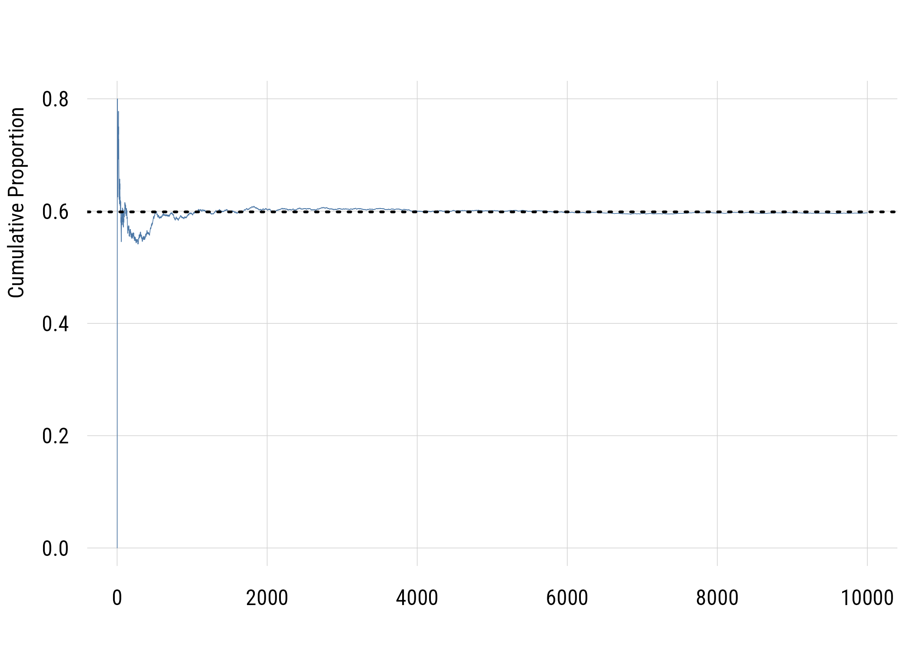
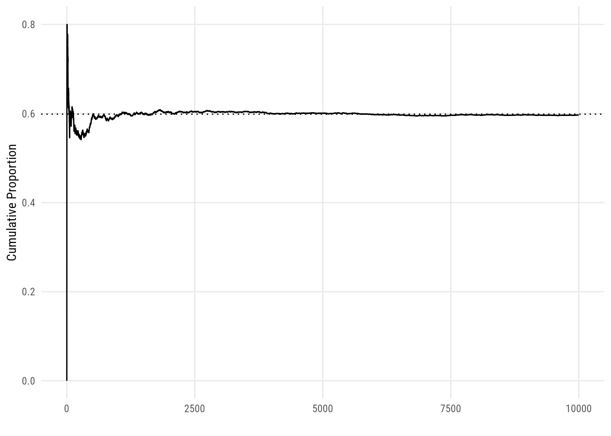
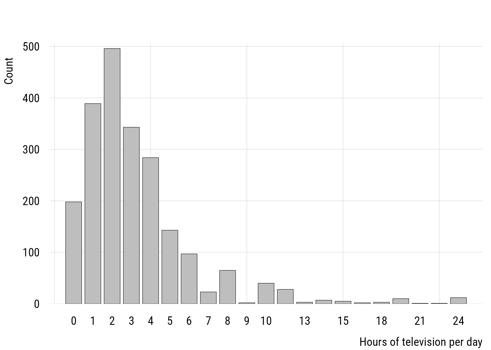
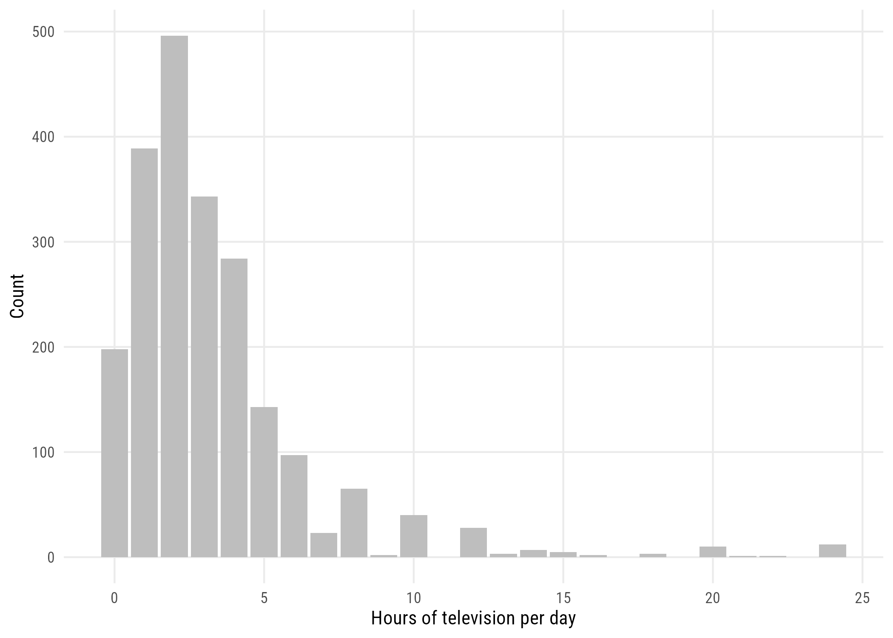
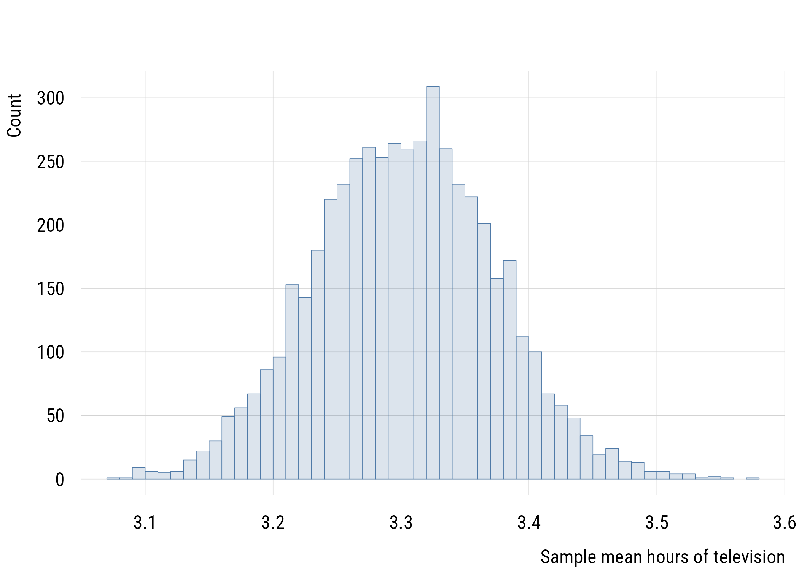
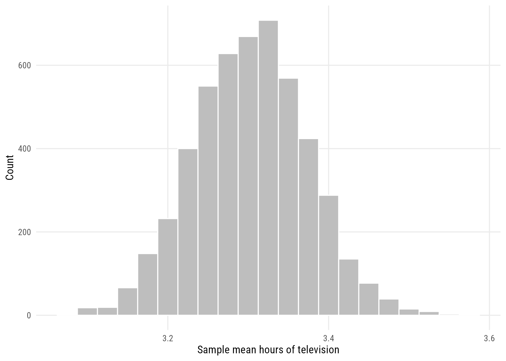
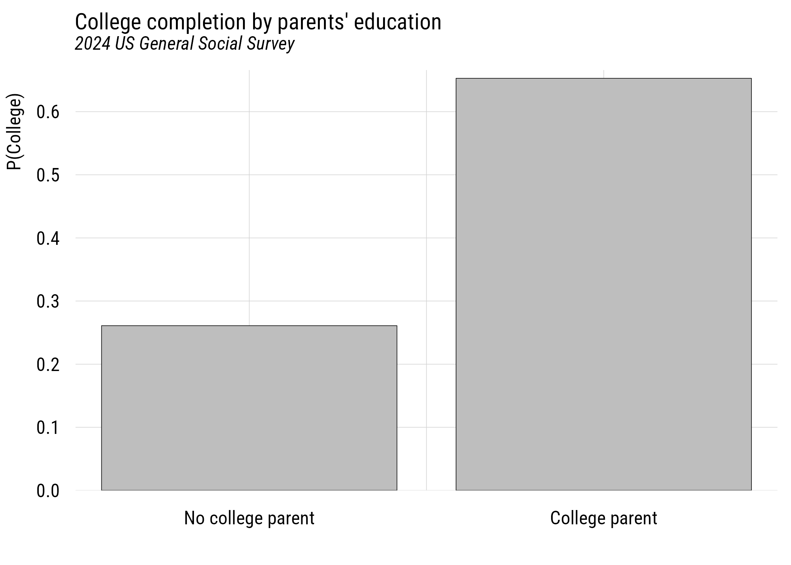
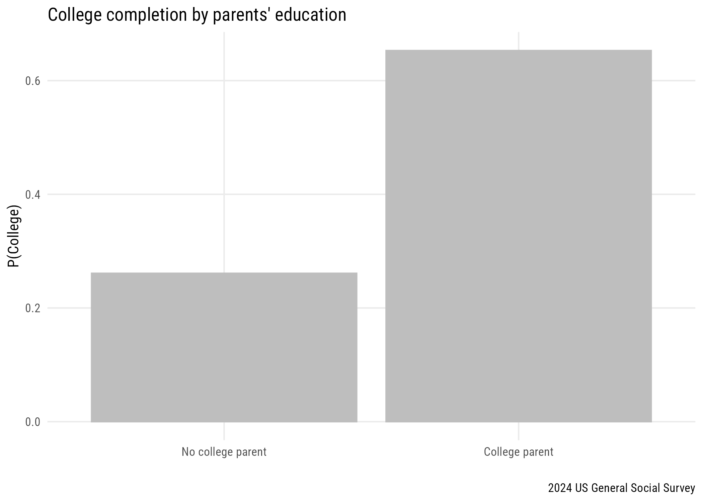

gss2024 <- readRDS(here::here("data", "gss2024.rds")) |>
haven::zap_labels()3 Probability
3.1 From simulations to laws
We saw two things in the simulations in Chapter 2:
- As the number of simulations gets bigger, the clearer the pattern we observe
- The pattern we see is a symmetrical distribution centered on the “true” value
This relates to two rules that are important in statistics.
3.1.1 Law of Large Numbers
The average of the results (e.g., means) obtained from a large number of independent random samples converges to the true value as the number of samples increases.
This applies to a single large sample or to the sum of many smaller samples (as we did with the simulations).
This only works because each observation (e.g., person) is randomly sampled.
Here it is happening. We draw 10,000 people one at a time from a population where the true proportion is 0.599, and track the running proportion.
p <- mean(gss2024$abany == 1, na.rm = TRUE)
set.seed(7)
lln_demo <- tibble(
samp_num = 1:10000,
x = rbinom(10000, 1, p),
cp = cummean(x)
)Show code
plt(cp ~ samp_num, data = lln_demo, type = "l",
xlab = "", ylab = "Cumulative Proportion")
abline(h = p, lty = 3, lwd = 2)
Show code
ggplot(lln_demo, aes(x = samp_num, y = cp)) +
geom_line() +
geom_hline(yintercept = p, linetype = "dotted") +
labs(x = "", y = "Cumulative Proportion")
The observed value eventually converges to 0.599. It’s still not perfect here!
It says nothing about any particular draw. After a run of non-supporters, the next person is not more likely to be a supporter. The line settles because later draws are averaged in with more and more earlier ones, not because anything corrects itself.
It depends entirely on randomness. Notice how much work rbinom() is doing: it draws independently, with the same probability every time. A sample collected some other way converges to whatever its selection process favors.
WarningBig is not the same as random
A non-random sample of a million people is not better than a non-random sample of a thousand. It is the same bias, measured more precisely. Sample size buys you protection against chance variation only.
3.1.2 Central limit theorem
In the long run, the distribution of averages of any distribution converges to the normal distribution.
Note
The normal distribution is that “bell-shaped” distribution you saw in Chapter 1.
It doesn’t matter what the shape of the empirical distribution is. Repeated estimates of its mean will form a normal distribution. Take hours of television watched per day, which is about as far from a tidy bell-shaped variable as the GSS offers:
tvdata <- gss2024 |>
select(tvhours) |>
drop_na()
c(n = nrow(tvdata), mean = mean(tvdata$tvhours), max = max(tvdata$tvhours)) n mean max
2152.000000 3.302509 24.000000 Show code
plt(~ tvhours, data = tvdata, type = "bar",
xlab = "Hours of television per day", ylab = "Count")
Show code
ggplot(tvdata, aes(x = tvhours)) +
geom_bar(fill = "gray") +
labs(x = "Hours of television per day", y = "Count")
Now the sampling experiment again, on the mean rather than a proportion.
# get sampling function
get_tv_mean <- function() {
slice_sample(tvdata,
n = nrow(tvdata), # sample size = data size
replace = TRUE) |> # replacement
pull(tvhours) |>
mean()
}
# draw samples
set.seed(722)
tv_samples <- tibble(
samp_id = 1:5000) |>
rowwise() |>
mutate(samp_mean = get_tv_mean())Show code
plt(~ samp_mean, data = tv_samples, type = "hist", breaks = 40,
xlab = "Sample mean hours of television", ylab = "Count")
Show code
ggplot(tv_samples, aes(x = samp_mean)) +
geom_histogram(fill = "gray", color = "white", binwidth = .025) +
labs(x = "Sample mean hours of television", y = "Count")
The lumpiness is gone. What is left is symmetric and bell-shaped, centered near the mean of the original data.
NoteWhat we just did, and what we could not do
We resampled from the sample, because the sample is the only data we have. That technique is the bootstrap, and it returns in Chapter 7.
What we could not do is draw five thousand fresh samples of Americans. Nobody can. The central limit theorem describes the distribution we would have seen had we been able to.
3.1.3 Summary of the two laws
We will return to this. For now, it’s important to remember:
- The Law of Large Numbers states that repeated random observations will converge to the true value;
- The Central Limit Theorem states that estimates (e.g., means) from repeated random samples will form a normal distribution regardless of the data distribution.
Warning
Non-random samples, no matter how large, will not converge to the true population value!
3.2 Putting this into practice
We aren’t totally ready for this (and we’ll come back) but here’s why this matters. If we have a “large enough” sample (just one, real-life sample), we can use that to estimate the uncertainty of the sampling process.
For example, if we had a sample of 400, 70% of whom are parents, we could say that, if we repeated our experiment infinite times, 95% of the estimated sample proportions would be between .655 and .745.
The formula for this is \(\hat{p} \pm 1.96 \times \sqrt{\hat{p}(1-\hat{p}) / n}\). But don’t worry about that for now!
p_hat <- .7
n <- 400
p_hat + c(-1, 1) * 1.96 * sqrt(p_hat * (1 - p_hat) / n)[1] 0.6550908 0.74490923.3 Probability basics
To really get this, we need probability. We haven’t defined it formally, but we’ve been using it in this course.
For example, when we defined a population of 100,000, exactly 70,000 of whom were parents, and sampled them at random, we made it so each “draw” had a probability of .7 of being a parent.
Note
Technically this isn’t true unless we do sampling with replacement. Otherwise the probability would change slightly with each draw.
We will build the rest of it from the sampling problem itself rather than from coins and dice.
3.3.1 Probability of an event
Let’s return to the abortion rights example. In the 2024 GSS, there are two possibilities: support abortion rights, \(S\), or oppose abortion rights, \(O\). These are complementary events, so \(O = \neg S\).
Together, these represent the event space, or the set of things that can happen in one event (sampling a person). We can write \(\Omega = \{S, \neg S\}\). These are mutually exclusive events.
abany <- gss2024$abany[!is.na(gss2024$abany)]
mean(abany == 1)[1] 0.5985981Since 59.9% of sample respondents support, we can say \(P(S) = 0.599\) and \(P(\neg S) = 0.401\). \(P(x)\) or \(Pr(x)\) means “the probability of \(x\).”
Probabilities of a complete set of mutually exclusive events always sum to 1. Something has to happen.
NoteA quiet assumption
Treating the sample proportion as the probability assumes the GSS respondents are the population. They are not, and Chapter 5 shows that a sample proportion is not the population proportion. For now we set that aside so we can develop probability on solid ground.
3.3.2 Probability of two events
If \(P(S) = 0.599\), what is the probability of sampling two people in a row who both support abortion rights?
These events are independent so the probability is \(0.599 \times 0.599 \approx 0.358\). Independent here means that the result of each draw has no effect on the value of other draws.
p^2[1] 0.3583197In general, for independent events,
\[P(A \cap B) = P(A) \times P(B)\]
where the \(\cap\) symbol means “and” (formally, the intersection of the two events). Three in a row would be \(p^3\), and so on.1
1 Strictly, this requires sampling with replacement, putting each person back before drawing again. Without replacement the probability shifts a little with each draw, because the pool changes. With a population of millions and a sample of thousands, the difference is far too small to matter.
3.4 Multiple attributes
Let’s look at a dataset with multiple variables per respondent. Sociology is largely the study of characteristics that travel together, so consider one of the discipline’s oldest questions: how much does your parents’ education shape your own? To do this, we’ll need to do some wrangling.
edu <- gss2024 |>
select(degree, madeg, padeg) |>
filter(!is.na(degree), !(is.na(madeg) & is.na(padeg))) |>
mutate(
college = degree >= 3,
parent_college = (!is.na(madeg) & madeg >= 3) | (!is.na(padeg) & padeg >= 3)
)
nrow(edu)[1] 3230In the GSS, degree records the highest degree earned, where 3 means a bachelor’s degree and 4 a graduate degree; madeg and padeg record the same for the respondent’s mother and father. We count someone as having a college degree if degree is 3 or more, and as having a college-educated parent if either parent does.
3.4.1 Contingency table
ct <- edu |>
tabyl(parent_college, college)
ct |> adorn_totals(c("row", "col")) parent_college FALSE TRUE Total
FALSE 1744 616 2360
TRUE 302 568 870
Total 2046 1184 3230This isn’t very “tidy” but it is a 2x2 table of counts of these two variables. This is called a contingency table. Every one of the 3230 respondents falls in exactly one of those four cells. It is often easier to read as proportions:
round(prop.table(table(parent_college = edu$parent_college,
college = edu$college)), 3) college
parent_college FALSE TRUE
FALSE 0.540 0.191
TRUE 0.093 0.176Those four numbers sum to 1, and from them we can read off every probability we need.
3.4.2 Marginal probability
The marginal probability is the probability of an event related to one variable without regard for the other variable. It gets its name from where it appears: in the margins of the table, when you add up a row or a column.
So what is the marginal probability of having a college degree, \(P(\text{College})\)? What is the marginal probability of having a college-educated parent?
mean(edu$college)[1] 0.3665635mean(edu$parent_college)[1] 0.26934983.4.3 Joint probability
The joint probability is the probability of two events happening at the same time. It is one cell of the table rather than a margin.
What is the joint probability of having a college degree and having a college-educated parent, \(P(\text{College} \cap \text{Parent college})\)?
mean(edu$college & edu$parent_college)[1] 0.1758514About 17.6% of respondents both finished college and had a parent who did.
3.4.4 Product of marginal probabilities
Why isn’t the joint probability here (0.176) the same as the product of the marginal probabilities (0.099)?
c(observed = mean(edu$college & edu$parent_college),
product = mean(edu$college) * mean(edu$parent_college)) observed product
0.17585139 0.09873381 What would it mean if this were true? (It’s not.)
\[P(\text{College}) \times P(\text{Parent college}) = P(\text{College} \cap \text{Parent college})\]
It would mean that the two variables were independent, i.e., that knowing one tells you nothing about the other.
3.4.5 Conditional probability
The final type we’ll learn is conditional probability. This is the probability of a specific outcome conditional on the value of another variable. We write it \(P(A \mid B)\), read “the probability of \(A\) given \(B\).”
Conditional probability is what we mean by a relationship between two variables.
What is the probability of finishing college conditional on having a college-educated parent? And conditional on NOT having one?
edu |>
group_by(parent_college) |>
summarize(p_college = mean(college), n = n())# A tibble: 2 x 3
parent_college p_college n
<lgl> <dbl> <int>
1 FALSE 0.261 2360
2 TRUE 0.653 870\(P(\text{C} \mid \text{PC}) =\) 0.653 and \(P(\text{C} \mid \neg \text{PC}) =\) 0.261. If these conditional probabilities were the same, the two variables would be independent.
Show code
cond <- edu |>
group_by(parent_college) |>
summarize(cp = mean(college))
plt(cp ~ factor(parent_college, labels = c("No college parent", "College parent")),
data = cond, type = "bar",
xlab = "", ylab = "P(College)",
main = "College completion by parents' education",
sub = "2024 US General Social Survey")
Show code
ggplot(cond, aes(x = factor(parent_college,
labels = c("No college parent", "College parent")),
y = cp)) +
geom_bar(stat = "identity", color = "gray", fill = "gray") +
labs(x = "", y = "P(College)",
title = "College completion by parents' education",
caption = "2024 US General Social Survey")
TipThree ways to say the same thing
Two variables are independent if any of these hold (and if one holds, all do):
- \(P(A \cap B) = P(A) \times P(B)\)
- \(P(A \mid B) = P(A)\)
- \(P(A \mid B) = P(A \mid \neg B)\)
Dependence is just the failure of these equalities. Most of statistics is measuring how badly they fail, and deciding whether the failure is larger than sampling alone would produce.
3.4.6 The condition is not symmetric
\(P(A \mid B)\) and \(P(B \mid A)\) are different quantities, and they are usually different numbers.
c(
p_college_given_parent = mean(edu$college[edu$parent_college]),
p_parent_given_college = mean(edu$parent_college[edu$college])
)p_college_given_parent p_parent_given_college
0.6528736 0.4797297 Among respondents with a college-educated parent, 65.3% finished college. But among respondents who finished college, only 48% had a college-educated parent. Both are true. They answer different questions, and the second is the one you would want if you were asking how many graduates are the first in their family.
3.5 Recap
This is a very basic introduction to probability. We will build on it but it’s important to understand the fundamentals of marginal, joint, and conditional probability.
- the Law of Large Numbers: repeated random observations converge to the true value
- the Central Limit Theorem: estimates from repeated random samples form a normal distribution whatever the data distribution
- neither law rescues a non-random sample, however large
- a probability is the long-run proportion of times an event occurs under repeated random draws; for a draw from a population it is just the proportion in that population
- for independent events, probabilities multiply
- a contingency table gives us marginal, joint, and conditional probabilities
- two variables are independent when the joint probability equals the product of the marginals, or equivalently when conditioning changes nothing
- \(P(A \mid B)\) and \(P(B \mid A)\) are different quantities
3.6 Practice
- Create two different two-by-two tables, at least one of which is from the GSS. Make sure to use
drop_na()to exclude missing data for now. - Compute and interpret all the marginal, joint, and conditional probabilities for each table.